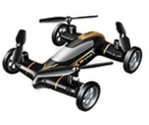
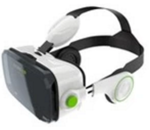

qsc.css Flex (qsc.css)采用12个栅格进行布局，可以快速布局出自己所需要的框架结构，能彻底解决布局＋样式的问题。
在qsc.css Flex中，使用了qsc-col(横向)和qsc-row(纵向)两种容器，只需要把栅格放入容器中即可。qsc.css Flex所有类支持嵌套布局，可任意进行排列。
使用qsc.css Flex可以方便解决垂直居中，多栏等高，等宽布局，任意对齐等。
下面先来看一个使用qsc.css Flex仿淘宝的布局案例：
可爱的你会喜欢
好品味从挑剔开始
疯狂赛车来袭
都帮你整理好啦
qsc.css Flex语法详解：
A.容器类
.qsc-col 横向排列
.qsc-row 纵向排列
B.栅格类
.qsc-col-* *为从1-12数字，默认将屏幕进行12等分进行排列
.qsc-offset-* *为从1-12数字，向左偏移量
.qsc-auto 自动填充宽度
C.对齐类
.qsc-top 顶端对齐
.qsc-bottom 底部对齐
.qsc-left 左对齐
.qsc-right 右对齐
.qsc-middle 垂直居中
.qsc-center 水平居中